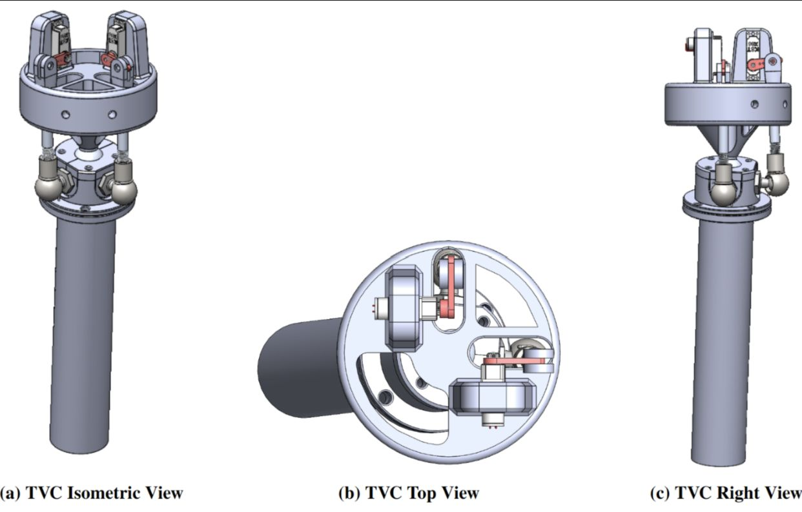
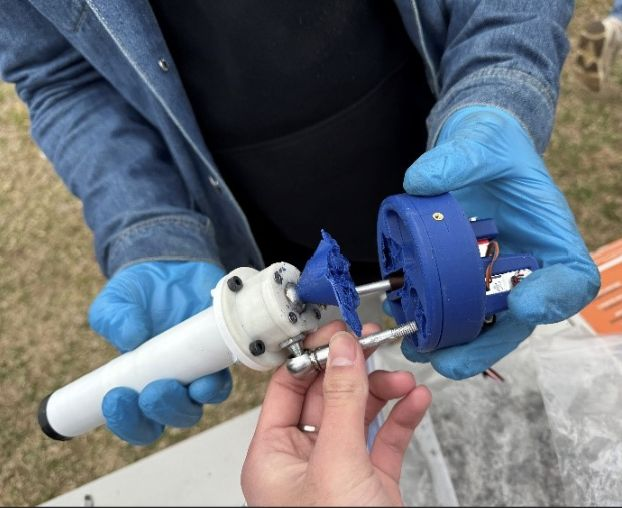
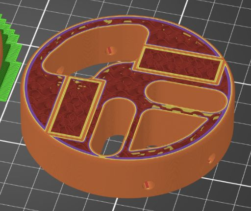

The story
A finless rocket has a problem: nothing passive keeps it pointed where you want it. Stability has to be active, which means steering the engine itself. The thrust-vector-control mount is the part that does that, gimbaling the motor to push the rocket back on course in flight.
I joined the GNC project in August 2024 alongside the teammate I would build this with. We were handed the previous year's mount and given a choice: revise and improve it, or start over from the ground up. The old mount had essentially been pulled from a published design and printed, so improving it meant inheriting someone else's decisions. We chose to start fresh. It was the harder path, but it gave us full control of the design from end to end, which was exactly what I wanted out of it.
The target was steep. The previous mount could only manage a few degrees of deflection (about ±2.9° in yaw and ±4.6° in pitch), boxed in by its linkage geometry and the diameter of the 3-inch body tube. Our goal was ±20° in any direction inside that same airframe, built mostly from 3D-printed and off-the-shelf parts. I treated it like a product development cycle: understand the requirements, study what exists, design and review, refine, prototype, test, integrate.
What it had to do
Before drawing anything, we pinned the constraints: about ±20° of uncoupled pitch and yaw, full 360-degree actuation, a fit inside the 3-inch tube, minimal mechanical play in the joints, and a build that leaned on 3D printing and COTS hardware so we could iterate quickly and affordably. It also had to survive the loads of static fires and live launches while staying serviceable between tests.
Studying what came before
Rather than start blind, we dug into the prior year's rockets, Gru and Vector, to pin down what was capping their range. The traditional gimbal, with separate rings for pitch and yaw, simply could not open up far inside the tight body tube, so iterating it would never reach ±20°. We went looking for a fundamentally different joint. Our research surfaced a promising ball-and-socket articulation, and we set about engineering our own version of it, sized to our airframe and our constraints. We later documented the full redesign in a paper submitted to the AIAA.
The design
We replaced the old gimbal with a central ball-and-socket joint that lets the motor pivot around a fixed top plate. Each servo drives one axis through a linkage: a rotational joint at the servo horn, a COTS linkage rod, and a side ball-socket joint, with the two side joints letting pitch and yaw move independently instead of fighting each other. That uncoupling is where much of the new range came from.
The preliminary design review changed an early decision. We had first laid the servos flat in the top plate, but for our components and layout that orientation made installation, access, and assembly difficult. Moving to smaller micro servos let us stand them vertically, in line with the pitch and yaw axes, which fit the cramped tube better and made the whole assembly far easier to build and service. It was a clean case of designing for assembly, not just for function.

Materials and prototyping
I split materials by job. The structural pieces that take heat and load (the top plate, motor sleeve, and linkage adapter) were FDM-printed in PETG. The ball-and-socket joint was printed on a Formlabs Form 4 in resin, because the smooth, fine-layer finish was what let the ball glide with low friction. The servos, linkage rods, and fasteners were off-the-shelf, chosen to fit both the envelope and the loads.

Testing and integration
We validated the mount across static fires and launches, and the first test flight taught us the most. The part of the top plate holding the servos turned out to be a weak point, so we increased the contact surface there and used slicer modifiers to locally thicken the walls and infill exactly where stress concentrated, plus added material where the ball joint threaded in. No full redesign, just targeted reinforcement where the hardware told us it was needed. Testing also settled our material choice the hard way: an early PLA top plate warped from the heat of the servos, which is why the structural parts moved to PETG and its higher heat tolerance.


Outcome
The mount reached ±20° of motion in any direction, a large jump from the previous design's few degrees, and held up across the rocket's static fires and three launches. Each round of testing tightened the assembly and cut play in the joint. The redesign became the second flown iteration of the GNC project's TVC system and the basis for our AIAA report.
What I'd refine next
Assembly was the design's real weak spot. Dialing in the central ball-and-socket fit took many reprints, and the off-the-shelf linkage rods had to be hand-sanded to matched lengths so the pitch and yaw axes stayed independent. So the honest list for a next version: reduce the play in the joint when the servos are loaded, streamline that assembly, and make the structure more inherently stable rather than reinforced after the fact.